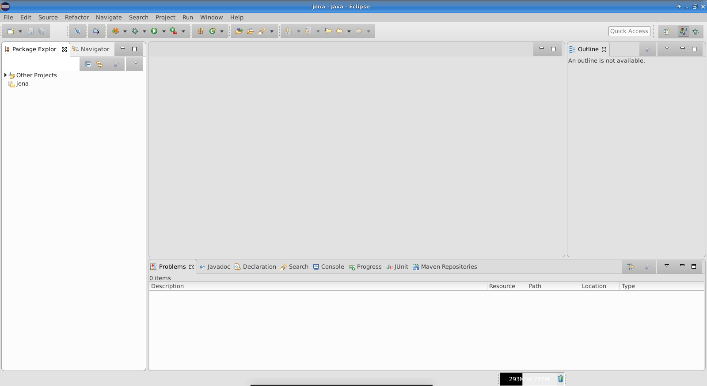
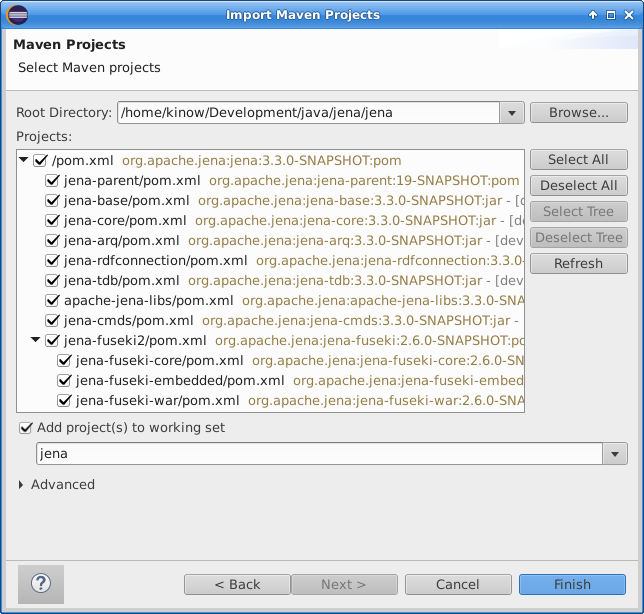
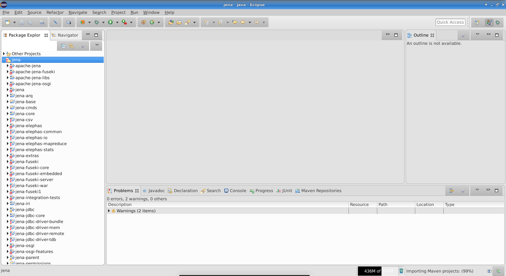
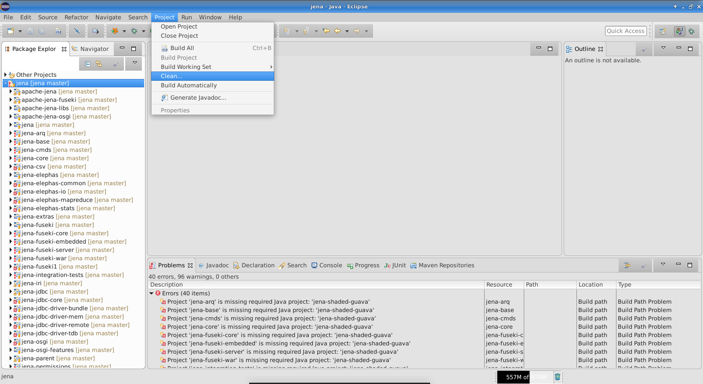
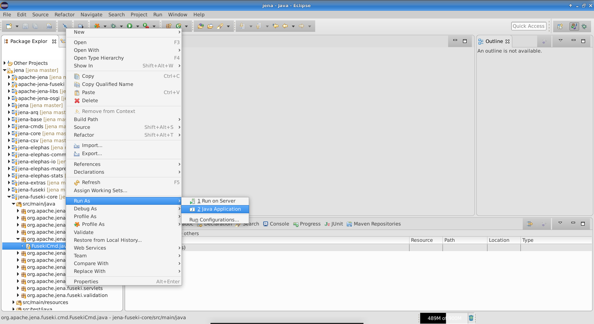
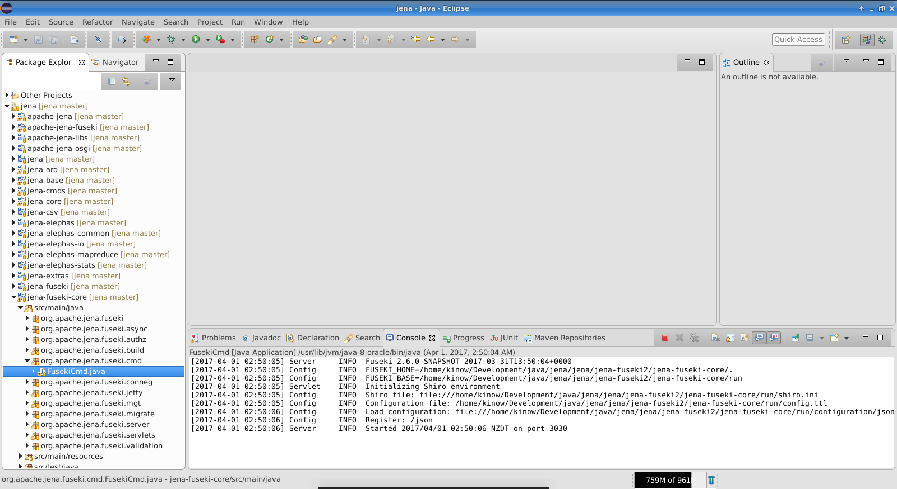

Usando o Jena com o Eclipse
Este tutorial mostrará como importar o projeto do Jena no Eclipse. A versão do Eclipse utilizada foi 4.7.0, e do Java foi 1.8.0_121. O sistema operacional não deve ser um problema, entã os ũnicos requisitos são Eclipse, Java 1.8.x, e git para baixar o código-fonte do Jena.
Configurando seu ambiente
O primeiro passo é instalar o Java JDK 1.8.x. As instruções para a instalação variam dependendo do sistema operacional, e não serão abordadas neste tutorial.
Após a instalação do Java, o próximo passo é o Eclipse. Você pode baixar uma versão do Eclipse, ou baixar o instalador e escolher entre as diferentes versões disponíveis. As instruções e screenshots a seguir foram feitos com a versão “Eclipse IDE for Java Developers”.
O Eclipse vem com uma versão do Apache Maven embutida, mas talvez você prefira utilizar uma versão externa para que você possa customizar as configurações para o seu ambiente. Este passo não é necessário para este tutorial, e também não será discutido neste tutorial.
Baixando o código-fonte
Siga as instruções da página Getting involved in Apache Jena para baixar o código-fonte do repositório Git. Muitos desenvolvedores baixam o código-fonte em um diretório dentro do workspace do Eclipse. Mas você pode importar o código-fonte no Eclipse de qualquer diretório, como será demonstrado a seguir.
E não esqueça de executar mvn clean install, para que o Eclipse possa encontrar todos as dependências necessárias.
Importando o código-fonte no Eclipse
Por padrão, o Eclipse provê uma integração com Maven. Antigamente você teria que instalar um plug-in primeiro. Mas se você tiver seguido as intruções anteriores, você deve estar pronto para importar o código-fonte.
Na figura anterior, o workspace do Eclipse está não tem nenhum projeto ainda. A perspectiva foi configurada para mostrar “working sets”, e já há um working set criado para o Jena. Este passo não é necessário para este tutorial, mas pode ser útil se você tiver vários projetos no seu workspace (por exemplo, se você tiver importado Apache Commons RDF e Apache Jena no mesmo workspace).
Padrão o Eclipse mantém seus projetos no painel à esquerda. Clique com o botão direito do mouse sobre este painel e escolha “Import”. Se você preferir, você pode utilizar o menu superior e ir para File / Import.

Você deverá ver um diálogo, onde poderá escolher entre diferentes tipos de projetos para importar no seu workspace. Para o Jena, você deve selecionar importar Existing Maven Project, que fica na categoria de projetos Maven.

Clicando em Next, você verá uma nova tela onde você poderá escolher a localização do código-fonte do Jena. Escolha o diretório onde você baixou o código-fonte na seção anterior deste tutorial.
Agora clique em Finish e o Eclipse deverá começar a importar o projeto. Este passo pode levar vários minutos, dependendo dos recursos disponíveis no seu sistema operacional e hardware. Você pode acompanhar o progresso na aba Progress, no painel inferior.
Assim que o projeto tiver sido importado no seu workspace, você deverá ver algo similar à tela seguinte.
Quando o projeto tiver sido importado, o Eclipse deverá começar a construir o projeto automaticamente se você estiver com as configurações padrões, senão você pode clicar em Project / _ Build All_.
O Eclipse mostrará um ícone vermelho nos projetos importados que tiverem problemas. Agora veremos como arrumar estes problemas.

Os problemas são geralmente relacionados a um problema conhecido por como um dos projetos utiliza o Maven Shade Plugin nas classes do Google Guava.
A solução é garantir que o projeto jena-shaded-guava fique fechado no workspace do Eclipse. Você pode simplesmente clicar com o botão direito sobre o projeto, e escolher Close. O ícone do projeto deverá mudar, indicando que ele foi fechado com sucesso.

Feito isso, é uma boa ideia selecionar a opção para limpar (Clean) todos os projetos abertos, para que o Eclipse então comece a construir os projetos novamente.
Você também pode atualizar as configurações dos projetos Maven, para que o Eclipse entenda que um projeto foi fechado e utilize a dependência do seu repositório Maven local, ao invés do projeto importado no workspace.

Se você seguiu todos os passos até aqui, e não há nenhuma tarefa rodando em segundo-plano (verifique a aba Progress) então o seu projeto deve estar sendo construído com sucesso.

Se você quiser testar o Fuseki agora, por exemplo, abra o projeto jena-fuseki-core, navegue até o pacote org.apache.jena.fuseki.cmd, e execute FusekiCmd como Java Application.
O Fuseki deverá iniciar, e estará disponível em http://localhost:3030.
Agora você já pode debugar o Jena, modificar o código-fonte e construir o projeto novamente, ou importar ou criar outros projetos no seu workspace, e utilizá-los com a última versão do Jena.